Chapter 3 Data Visualization
Learning Objectives
After studying this chapter, a student will be able to:
- describe the main Python visualization libraries;
- create line plots, bar plots, pie charts, and histograms with Matplotlib;
- prepare a real dataset for plotting using the Pandas
.map()method; - create box plots, strip plots, and swarm plots with Seaborn; and
- create scatter plots, heatmaps, density plots, cumulative-frequency plots, and error bars.
Data visualization is the process of interpreting data in a pictorial or graphical form. A single well-chosen chart can communicate the message of thousands of numbers far more effectively than a table.
Python has several visualization libraries. Matplotlib is the foundational library for basic charts; its pyplot module makes plotting straightforward and is conventionally imported as plt. Seaborn is built on top of Matplotlib and produces attractive statistical graphics with less code; it is imported as sns. Other libraries mentioned in the syllabus include Plotly (for interactive web charts), ggplot (which builds charts layer by layer using the “grammar of graphics”), Geoplotlib (for plotting geographical map data), and the plotting tools built directly into Pandas.
The examples in this chapter use the course dataset, College_Data.csv, described in the Preface.
3.1 Basic Charts with Matplotlib
Every Matplotlib chart is displayed by calling plt.show() at the end. Titles and axis labels are added with plt.title(), plt.xlabel(), and plt.ylabel().
3.1.1 Line Plot
A line plot shows how a quantity changes across a continuous sequence, such as values over time. The two sequences passed to plt.plot() — the x-coordinates and the y-coordinates — must be of the same length.
import matplotlib.pyplot as plt
years = [2018, 2019, 2020, 2021, 2022]
sales = [120, 135, 150, 145, 170]
plt.plot(years, sales)
plt.title("Company Sales Over Time")
plt.xlabel("Year")
plt.ylabel("Sales in Thousands")
plt.show()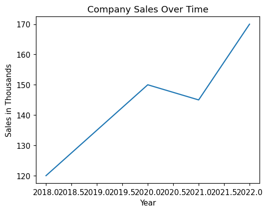
3.1.2 Bar Plot
A bar plot compares the quantities of distinct categories. The function plt.bar() draws vertical rectangles, and the color argument changes their colour.
import matplotlib.pyplot as plt
products = ['Apples', 'Oranges', 'Bananas']
quantities = [50, 30, 45]
plt.bar(products, quantities, color='orange')
plt.title("Fruit Inventory")
plt.show()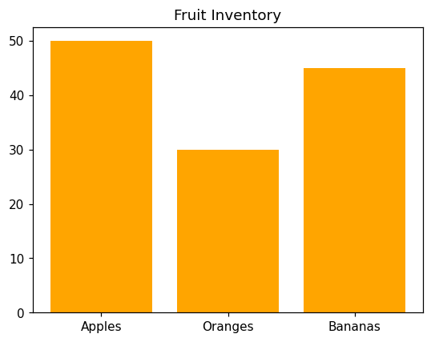
3.1.3 Pie Chart
A pie chart shows how a whole is divided into proportional parts. In plt.pie(), the numerical data are given first and the category names are supplied through the labels argument. The autopct='%1.1f%%' argument tells Python to calculate each slice’s percentage and display it to one decimal place.
import matplotlib.pyplot as plt
expenses = ['Rent', 'Food', 'Transport']
costs = [1200, 800, 400]
plt.pie(costs, labels=expenses, autopct='%1.1f%%')
plt.title("Monthly Budget")
plt.show()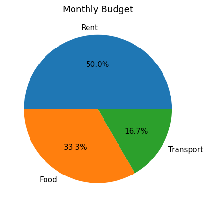
3.1.4 Histogram
A histogram looks like a bar chart but serves a different purpose: it groups a list of numbers into ranges called bins and counts how many values fall into each, revealing the distribution of the data. It takes a single list of numbers rather than an x and a y list.
import matplotlib.pyplot as plt
scores = [55, 62, 67, 71, 73, 74, 78, 80, 82, 85, 88, 90, 92, 95]
plt.hist(scores, bins=4, edgecolor='black')
plt.title("Distribution of Exam Scores")
plt.xlabel("Score Ranges")
plt.ylabel("Number of Students")
plt.show()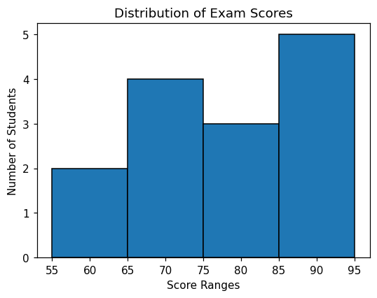
The bins=4 argument divides the data into four equal ranges, and edgecolor='black' draws a border around each bar.
3.2 Preparing the College Data for Plotting
The categorical variables in the College Data (such as Gender, Locality, and College) are stored as numbers. If plotted directly, the charts would show 0 and 1 on the labels, which is confusing. The Pandas .map() method replaces these codes with readable text before plotting. It works like a dictionary lookup, scanning a column and replacing each code with its label.
import pandas as pd
import matplotlib.pyplot as plt
cd = pd.read_excel("College Data.xlsx")
cd['Gender'] = cd['Gender'].map({0: 'Male', 1: 'Female'})
cd['Locality'] = cd['Locality'].map({0: 'Urban', 1: 'Rural'})
cd['College'] = cd['College'].map({1: 'College A', 2: 'College B', 3: 'College C'})The examples that follow assume the data has been read and cleaned in this way.
3.2.1 Pie Chart — Gender Distribution
To chart a category, its values are first counted with .value_counts().
gender_counts = cd['Gender'].value_counts()
plt.pie(gender_counts.values, labels=gender_counts.index, autopct='%1.1f%%', startangle=90)
plt.title("Gender Distribution of PG Students")
plt.show()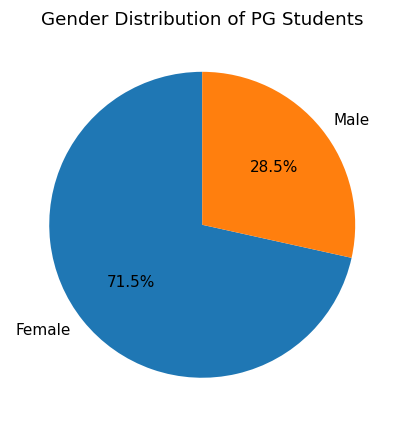
Here startangle=90 rotates the pie so that it appears upright.
3.2.2 Bar Plot — Students per College
college_counts = cd['College'].value_counts()
plt.bar(college_counts.index, college_counts.values, color='orange', edgecolor='black')
plt.title("Number of Students in Each College")
plt.xlabel("College Name")
plt.ylabel("Number of Students")
plt.show()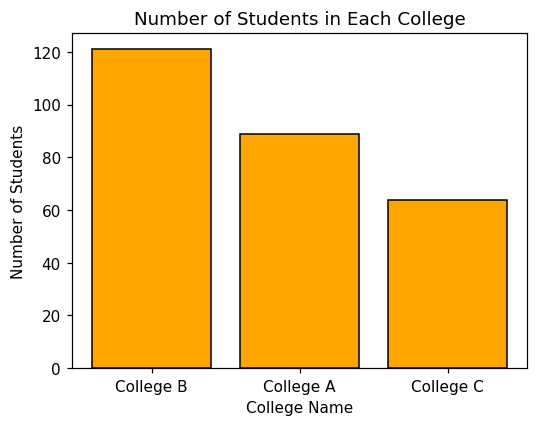
3.2.3 Histogram — Distribution of Degree Marks
For a histogram the raw column of marks is passed directly, without counting first.
plt.hist(cd['Degree'], bins=10, color='skyblue', edgecolor='black')
plt.title("Distribution of Degree Marks")
plt.xlabel("Percentage of Marks")
plt.ylabel("Number of Students")
plt.show()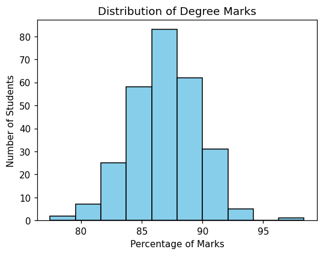
3.2.4 Line Plot — Average Marks Progression
Although this dataset has no year column, a line plot can show how the average mark changes across the three educational stages SSLC, Plus Two, and Degree.
avg_sslc = cd['SSLC'].mean()
avg_plustwo = cd['PlusTwo'].mean()
avg_degree = cd['Degree'].mean()
education_stages = ['SSLC', 'PlusTwo', 'Degree']
average_marks = [avg_sslc, avg_plustwo, avg_degree]
plt.plot(education_stages, average_marks, marker='o', color='red', linestyle='--')
plt.title("Trend of Average Marks by Education Stage")
plt.xlabel("Education Stage")
plt.ylabel("Average Marks (%)")
plt.grid(True)
plt.show()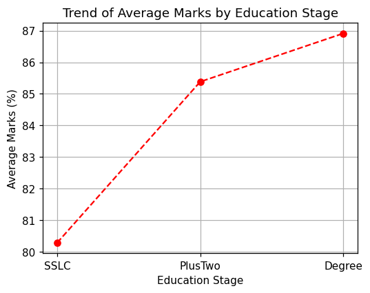
Here marker='o' places a dot at each point, linestyle='--' makes the line dashed, and plt.grid(True) adds a background grid for easier reading.
3.3 Statistical Charts with Seaborn
Seaborn is imported alongside Matplotlib and Pandas. The data is loaded and cleaned in the same way as before.
3.3.1 Box Plot
A box plot (box-and-whisker plot) displays the distribution of data through a five-number summary: minimum, first quartile, median, third quartile, and maximum. It is the best chart for spotting outliers. In Seaborn the categorical variable is given to x, the numerical variable to y, and the DataFrame to data.
sns.boxplot(x='College', y='Degree', data=cd)
plt.title("Box Plot of Degree Marks by College")
plt.xlabel("College Name")
plt.ylabel("Degree Marks (%)")
plt.show()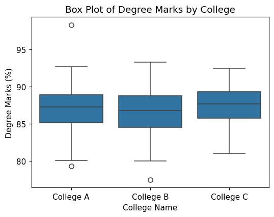
The box represents the middle 50% of students, the line inside it is the median, the whiskers show the rest of the distribution, and any isolated dots beyond the whiskers are outliers.
3.3.2 Strip Plot
A strip plot is a scatter plot in which one axis represents categories. The jitter=True argument spreads overlapping points slightly sideways so that individual points remain visible even when several students share the same mark.
sns.stripplot(x='Gender', y='PlusTwo', data=cd, jitter=True)
plt.title("Strip Plot of PlusTwo Marks by Gender")
plt.xlabel("Student Gender")
plt.ylabel("PlusTwo Marks (%)")
plt.show()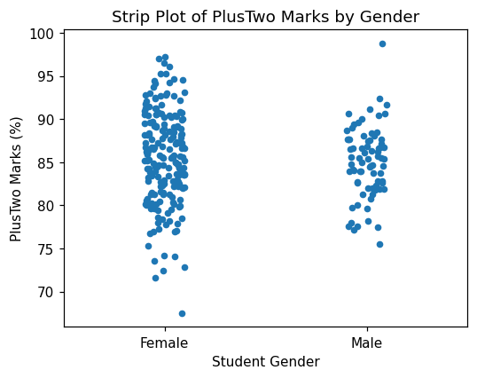
3.3.3 Swarm Plot
Even with jitter, a strip plot can look crowded. A swarm plot positions every point so that none overlap, producing a shape resembling a swarm of bees; its width shows where the data is most dense.
sns.swarmplot(x='Locality', y='SSLC', data=cd)
plt.title("Swarm Plot of SSLC Marks by Locality")
plt.xlabel("Student Locality")
plt.ylabel("SSLC Marks (%)")
plt.show()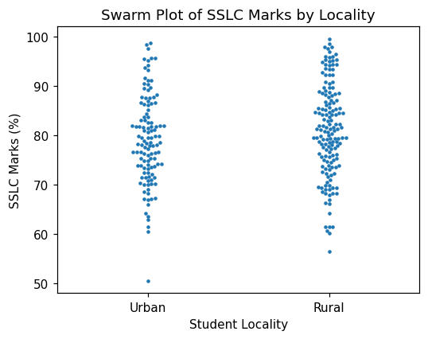
3.4 Advanced Plots
3.4.1 Scatter Plot
A scatter plot shows the relationship between two numerical variables. Here it is used to see whether students who scored well in Plus Two also scored well in their Degree.
plt.scatter(cd['PlusTwo'], cd['Degree'])
plt.xlabel("PlusTwo Marks (%)")
plt.ylabel("Degree Marks (%)")
plt.title("Scatter Plot of PlusTwo vs Degree Marks")
plt.show()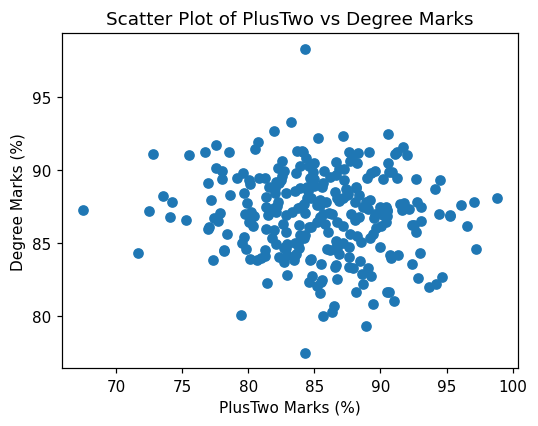
The same relationship can be drawn interactively with Plotly, or layer by layer with ggplot:
# Interactive scatter plot with Plotly (displays inside Colab)
from plotly.offline import init_notebook_mode, iplot
import plotly.graph_objs as go
init_notebook_mode(connected=True)
trace = go.Scatter(x=cd['PlusTwo'], y=cd['Degree'], mode='markers')
iplot([trace])# Scatter plot with ggplot (requires: pip install ggplot)
from ggplot import *
p = ggplot(aes(x='PlusTwo', y='Degree', color='Gender'), data=cd)
p + geom_point() + ggtitle("PlusTwo vs Degree Marks")In the Plotly code, mode='markers' draws dots rather than a line, and iplot() produces an interactive chart on which values appear when the mouse hovers over a point. In the ggplot code, aes() maps the axes and colour, and geom_point() adds the layer of dots.
3.4.2 Heatmap
A heatmap uses colour to show the intensity of the numbers in a two-dimensional matrix. It is an excellent way to display the correlation between variables. The Pandas .corr() method computes the correlations first.
correlations = cd[['SSLC', 'PlusTwo', 'Degree']].corr()
sns.heatmap(correlations, annot=True, cmap='coolwarm')
plt.title("Correlation Heatmap of Student Marks")
plt.show()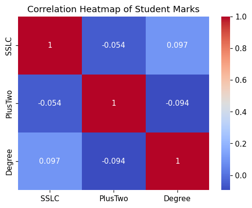
The argument annot=True writes the correlation values inside the coloured cells, and cmap='coolwarm' shades high values red and low values blue.
3.4.3 Density Plot and Cumulative Frequency
A density plot is a smoothed version of a histogram showing the shape of the data, and can be drawn directly from a Pandas column. A cumulative-frequency plot shows a running total, obtained by adding cumulative=True to a histogram.
# Density plot using Pandas directly
cd['Degree'].plot.density(color='purple', linewidth=3)
plt.title("Density Plot of Degree Marks")
plt.xlabel("Marks (%)")
plt.show()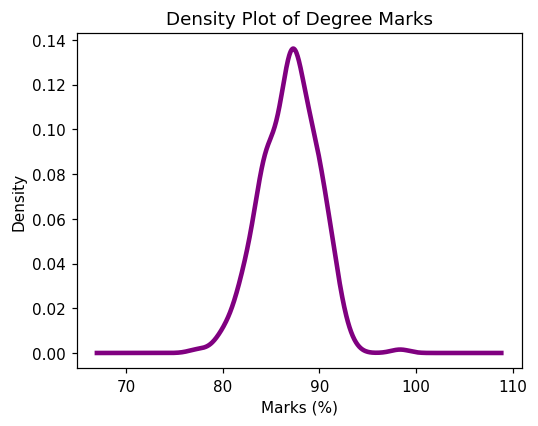
# Cumulative frequency using Matplotlib
plt.hist(cd['Degree'], bins=20, cumulative=True, color='orange', edgecolor='black')
plt.title("Cumulative Frequency of Degree Marks")
plt.xlabel("Marks (%)")
plt.ylabel("Running Total of Students")
plt.show()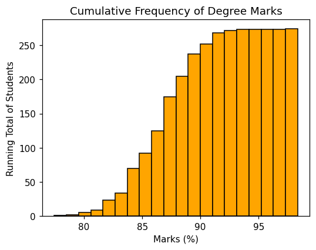
3.4.4 Error Bars
An error bar is a line drawn through a data point to represent uncertainty or variation. Here the average Degree mark for each college is plotted, with error bars showing the standard deviation.
avg_marks = cd.groupby('College')['Degree'].mean()
std_marks = cd.groupby('College')['Degree'].std()
plt.bar(avg_marks.index, avg_marks.values, yerr=std_marks.values,
capsize=5, color='lightblue', edgecolor='black')
plt.title("Average Degree Marks per College with Error Bars")
plt.ylabel("Average Marks (%)")
plt.show()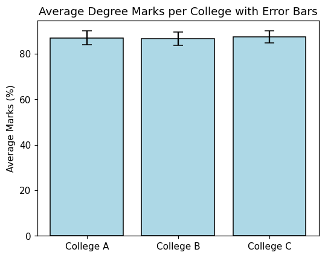
The .groupby() method finds the mean and standard deviation for each college. The argument yerr=std_marks.values draws the vertical error lines, and capsize=5 adds small horizontal caps at their ends.
Practice Exercises
Exercise 3.1 — A Line Plot. Heart rate was recorded each hour for four hours as [72, 75, 78, 74] at hours [1, 2, 3, 4]. Draw a line plot of this data with a title.
Exercise 3.2 — A Bar Plot. Three departments ['IT', 'HR', 'Sales'] have [10, 6, 14] employees. Draw a green bar plot comparing them.
Exercise 3.3 — A Histogram. Using the College Data, draw a histogram of the SSLC column with 20 bins and a black edge colour.
Exercise 3.4 — A Box Plot. Using the College Data, draw a Seaborn box plot of Degree marks grouped by Gender.